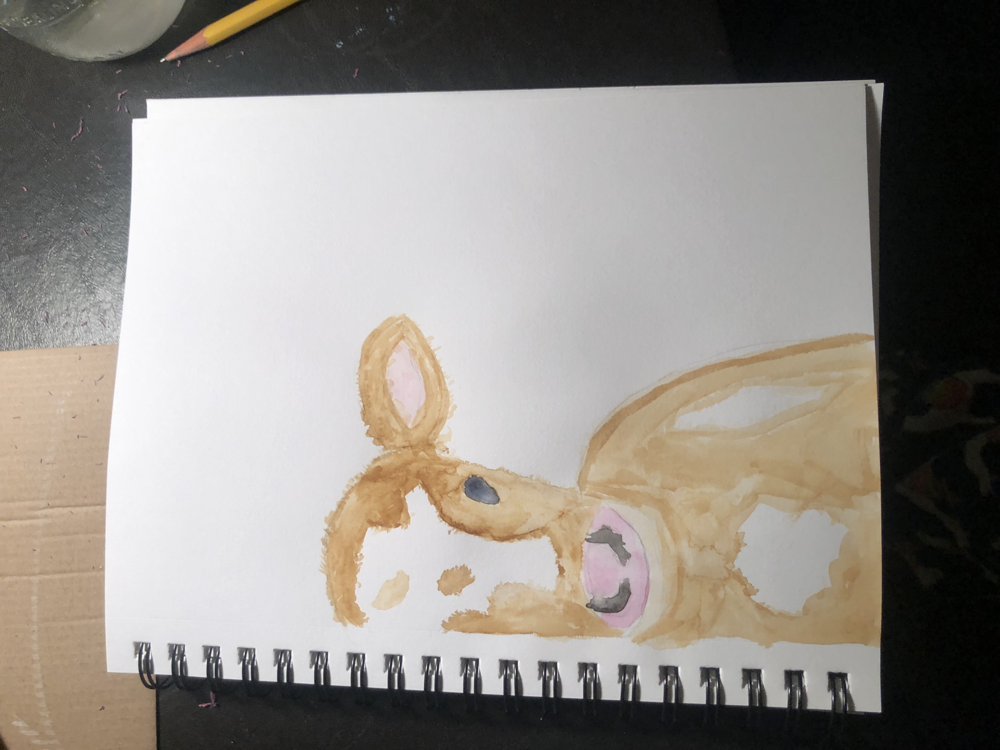
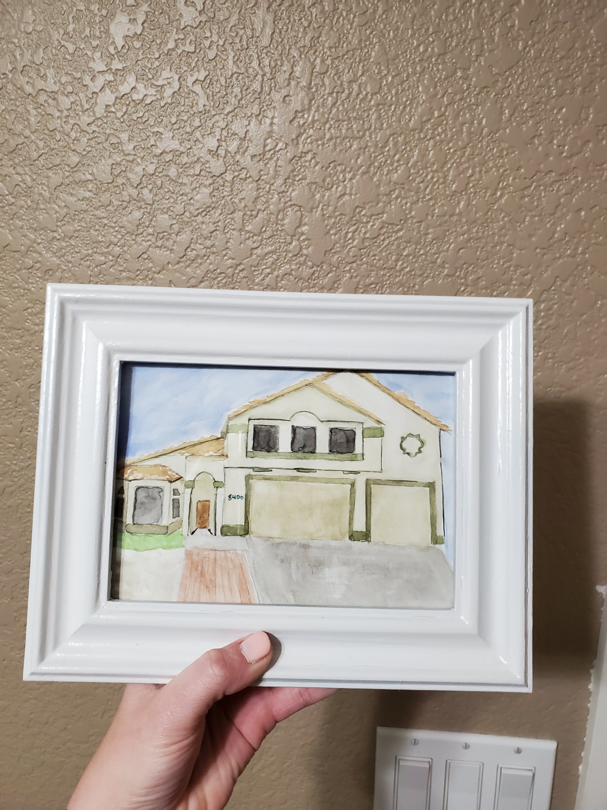
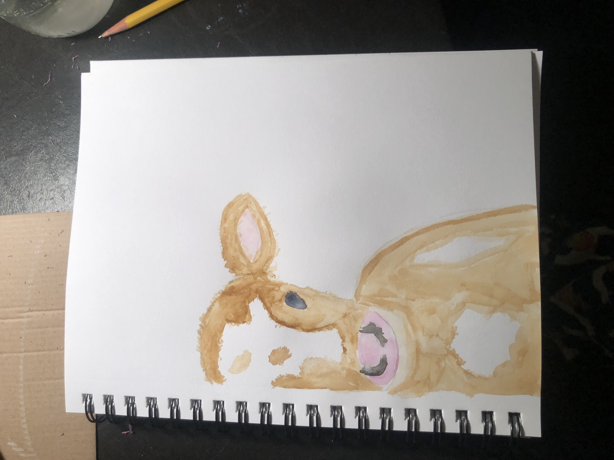
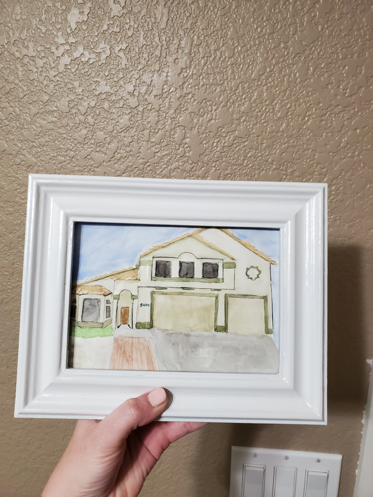

Water Coloring
At the start of Covid, I decided I should try a new hobby to get through the isolation. I started watercoloring. As I watched YouTube videos and practiced, I slowly got better.
Here's how you can get started too!
- Get the following supplies:
- Multi-Media sketchbook
- Watercolor paint brushes
- Winsor & Newton watercolor tubes
- Cup of water
- Brainstorm and gather inspiration of what you want to paint. You can use these resources to help get ideas
- Pinterest
- Your own photos
- YouTube
- Try different techniques like:
- Practice, Practice, Practice!
The more you paint, the better you become
Remember to have fun with it!
Here are some of my beginner art pieces.
 


